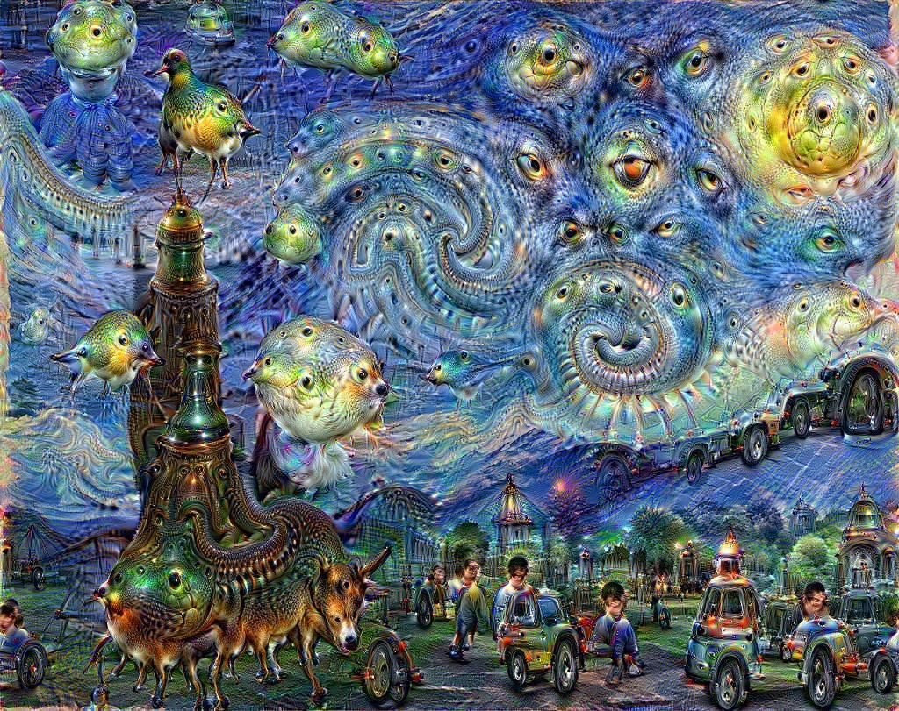

Interests in technological art
Artificial Intelligence Art
DALL-E 2 AI
One of the greatest uses of artificial intelligence is in the art world. Artists who want to create quality work can now use the power of computers to understand how they want to paint, which colors they are thinking about, what shapes they would like and so on. Artists who have have worked with computers for years have used them to make reproductions of famous paintings. The results are often stunning but rarely convincing. Artists who have never had access to a computer before now have a new and powerful tool at their disposal: a great way to create digitally-reproduced works that will be perfect replicas of the original.